|
STM32 Motor Control SDK MCFW-6.4.1
Software Development Kit to build applications driving PMSM Motors with STM32
|
|
STM32 Motor Control SDK MCFW-6.4.1
Software Development Kit to build applications driving PMSM Motors with STM32
|
Prev: Open loop description and usage ↤| Table of Contents |↦ Next: Motor Control features
In this chapter we will explain the causes and solutions of the different firmware errors that can occur when using the MCSDK.
The new PWM duty cycle is calculated and must be computed before the next PWM cycle starts. If the duty cycle is set too late to be considered in the next PWM cycle, a FOC duration error will occur.
Reasons for FOC Duration error:
1- The execution rate is too low. For low-inductance motors, the FOC execution rate can be increased while maintaining a high PWM frequency to save CPU load. Please check and increase the value of the Regulator execution time parameter in the 'Current Sensing' window of the MCWB.
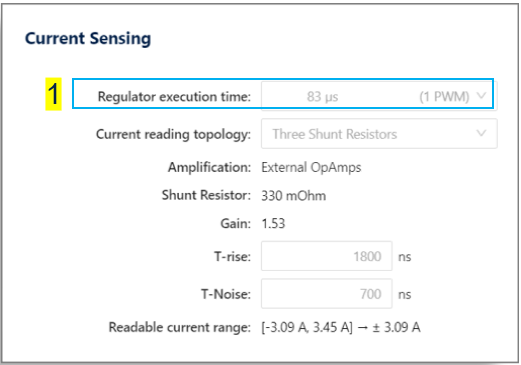
2- The PWM frequency is too high. Please check and decrease the value in the PWM Frequency section of the Config tab in the PWM Generation window of the MCWB.
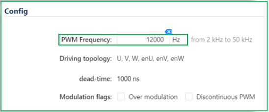
3- The IDE is not optimized for speed. Please ensure that your C compiler project options have been set to a high-speed level of optimization.
This is an external hardware protection mechanism that generates a BREAKIN event. When a threshold is reached, the PWM is turned off through an interrupt.
Reasons for Over Current error:
1- Current sensing topology is incorrect. Please check and select the appropriate current sensing topology configuration that corresponds to your design in the 'Current Sensing' window of the MCWB.
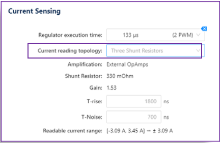
2- The current limit is too low. Please check and adjust the current sensing parameters in the 'Over Current Protection' section of the 'Current Sensing' window of the MCWB.
In this example, during the second phase of the START process, an overcurrent occurred due to the PWM frequency being too low (5kHz)
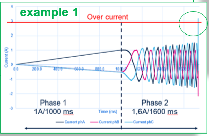
3- PWM too low, please check and increase the PWM frequency into the section Config of the PWM Generation window of the MCWB.
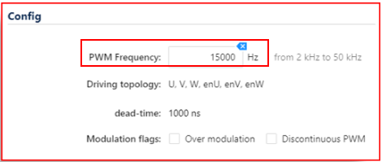
4- Bad choice of current ramp. Please check and decrease the current target for the phase configuration in the 'Start-up profile' section of the 'Sensorless start-up parameters' tab in the 'Speed Sensing' window of the MCWB.
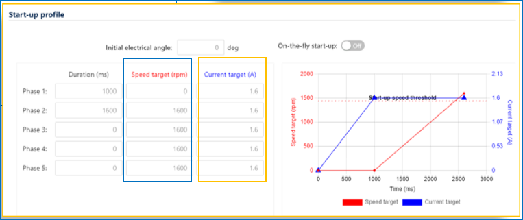
5- The speed reference is too low. Please check and increase the speed target for the phase configuration in the 'Start-up profile' section of the 'Sensorless start-up parameters' tab in the 'Speed Sensing' window to match the 'Start-up speed' threshold in the 'Start-up exit condition' section of the same tab in the 'Speed Sensing' window of the MCWB.
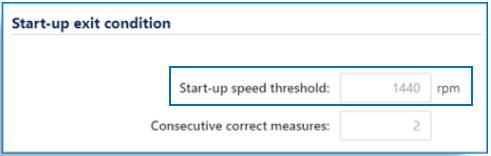
6- There is a pin mapping error: 2 pins are swapped for current reading. Please check your design to ensure that there are no errors in the current reading input.
Convergence: The STO PLL or the STO CORDIC estimated electrical rotor speed needs to be within the range of the speed expected by the virtual speed sensor N times. When the minimum speed is reached, convergence is checked to exit the 'Start' state within the time allocated for start-up. If, during N consecutive periods, the estimated speed has not always been in the range, this error is raised.
Reasons for Start-Up Failure error:
1- The minimum start-up speed is too high. Please check and decrease the value of the 'Start-up speed threshold' parameter in the 'Start-up exit condition' section of the 'Sensorless start-up parameters' tab in the 'Speed Sensing' window of the MCWB.
2- The speed measured using PLL is not reliable. Please check and decrease the 'consecutive correct measures' value in the 'Start-up exit condition' section of the 'Sensorless start-up parameters' tab in the 'Speed Sensing' window of the MCWB. In this example (3), the last measured speed using PLL is below the minimum start-up speed..
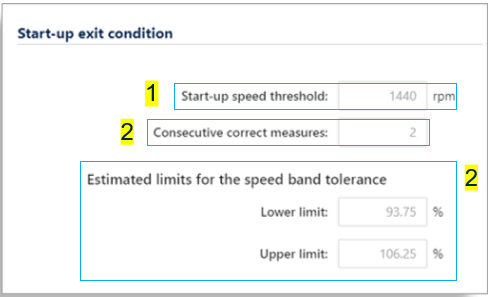
3- The range for the comparison speed is too narrow. Please check and increase the range by decreasing the lower limit and/or increasing the upper limit of the 'Estimated limits for the speed band tolerance' parameters in the 'Start-up exit condition' section of the 'Sensorless start-up parameters' tab in the 'Speed Sensing' window of the MCWB.
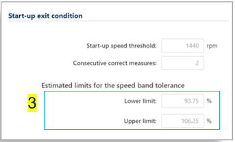
4- The final ramp of the start-up phase is too low. Please check and decrease the current target for the phases configuration in the 'Start-up profile' section of the 'Sensorless start-up parameters' tab in the 'Speed Sensing' window of the MCWB.
5- The time for start-up is too short. Please check and increase the 'Duration' parameter for the different phases used in the 'Start-up profile' section of the 'Sensorless start-up parameters' tab in the 'Speed Sensing' window of the MCWB.
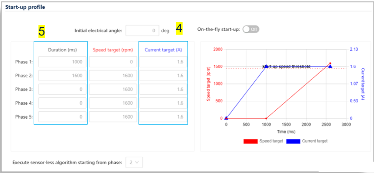
6- Too much load, please reduce or change the load during the start-up phase. Excessive load can prevent the motor from reaching the minimum speed required for successful start-up. To resolve this issue, try reducing the load or changing the load profile during the start-up phase.
A Start-Up Failure occurred during the SWITCH OVER of the state machine.
Closed loop: At the end of the pre-defined time for the Switch Over state, the virtual speed sensor must be in the reliability range defined by the Max. Application speed. The Switch Over state must take place during the rev-up phases. When the loop is closed, we go out of the Switch Over state and the rev-up is over.
1- The minimum start-up speed is too high. Please check and decrease the value of the "Start-up speed threshold" parameter in the "Start-up exit condition" section of the "Sensorless start-up parameters" tab in the "Speed Sensing" window of the MCWB. In example 4, the start-up was successful, but the motor did not stay in the "Switch Over" phase long enough to complete the rev-up, likely due to a high start-up speed threshold setting.
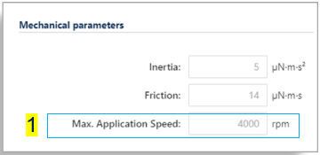
2- The Switch Over duration is too high. Please check and decrease the value of the 'Duration' parameter in the 'Start-up exit condition' section of the 'Sensorless start-up parameters' tab in the Speed Sensing window of the MCWB.
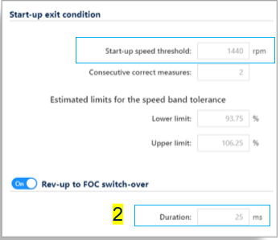
3- VSS speed is not within the authorized speed range (0 to Max). Please check and decrease the value of the Speed target parameter in the Start-up profile section of the Sensorless start-up parameters tab in the Speed Sensing window to ensure it is less than the Max. Application Speed parameter in the Mechanical parameters section of the Motor window in the MCWB.
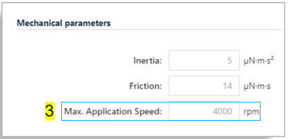
4- Rev-up phase time is too short. Please check and increase the value of the "Duration" parameter in the "Start-up profile" section of the "Sensorless start-up parameters" tab in the Speed Sensing window of the MCWB.
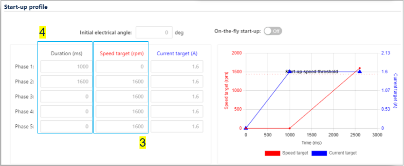
An under voltage error occurred during the start of the state machine.
The value of the power supply board is lower than the expected value.
Please check that the power board is properly supplied or that the voltage supplied has the appropriate value.
The value of the power supply board is over the expected value.
Current of phase 1 is too high, please check and decrease the value of the Current target parameter of the section Start-up profile of the tab Sensor less start-up parameters into the Speed Sensing window of the MCWB to avoid exceeding the power supply board's limit.
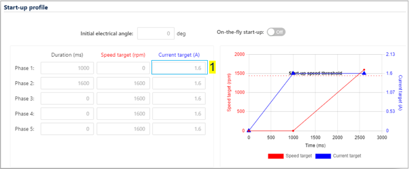
An Overheat error occurred during the START-UP and the RUN of the state machine.
The temperature of the board is higher than expected. The current provided to the 3 phases is increasing without any rotation of the motor. This is likely the consequence of a wrong management of the 3 Phases transistor switch command.
Reasons for Overheat error:
1- Wrong current sensing configuration, please check and select the right configuration corresponding to your design into the Current Sensing window of the MCWB.
2- Missing relevant information for the FW. Please check that the information requested by the FW through input signals is well connected (current reading, V bus, hall or encoder sensors...).
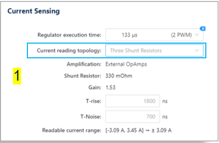
A Speed Feedback error occurred during the RUN of the state machine.
Speed reliability : In the high frequency task, the rotor speed is stored in a buffer of size X. In the medium frequency task, the variance of the buffer values is calculated. If the variance is in the range set in the MCWB the speed is reliable. The speed is not reliable if the variance is not in the range X times. During the state RUN, if the average of the speed measured by the STO PLL is not reliable, a Speed Feedback error occurred.
Reasons for Speed Feedback error:
1- Speed measured by the STO PLL is not reliable during the Switch Over phase. Please check and adjust the following parameters: decrease the value of the Variance Threshold parameter, decrease or increase the value of the Average speed depth for speed loop parameter, and increase the value of the Max Num. Errors before fault parameter in the Observer + PLL (sensorless) section of the Main Sensor tab in the Speed Sensing window of the MCWB.
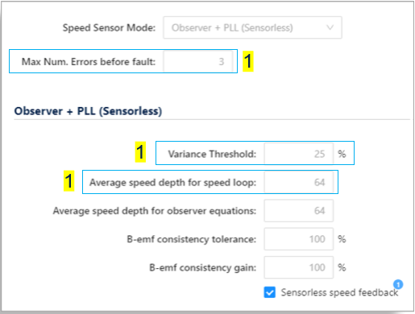
2- During the start, the ramp measurement has oscillations due to a bad Back EMF estimation. Please check and adjust the PLL Gain, as G2 is too high. Reduce G2 to minimize the measurement error caused by noise by changing the G2 value in the Observer and PLL section of the Speed Sensing window in the MCWB.
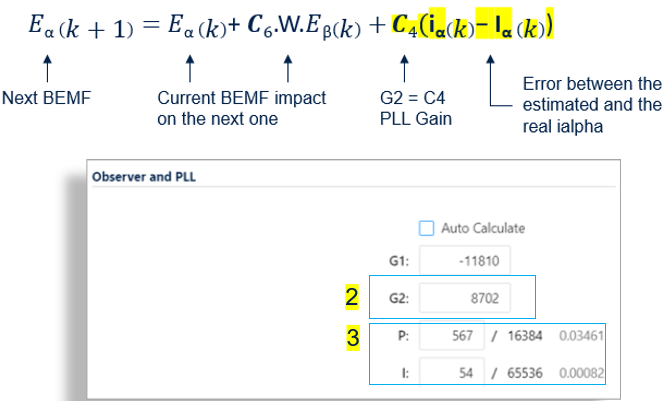
3- Please check the values of the P and I parameters of the Observer and PLL sections in the Speed Sensing window of the MCWB for the speed regulator's Kp and Ki parameters.
The execution of the MCSDK FW has resulted in a hard fault of the processor.
Reasons for Software error:
The MCSDK FW has entered an infinite loop when a hard fault exception occurred. Please use your IDE to debug your software and identify the cause of this exception.
Prev: Open loop description and usage ↤| Table of Contents |↦ Next: Motor Control features